Alex's Stuff
Horn Repair - an Exercise in Hubris and Basic Expected Value
August 16, 2024
One of my majors in university was French horn performance. As one might expect, I had a French horn. My first one was stolen at the end of my freshman year, so I replaced it with the Verus VII, courtesy of Houghton Horns.
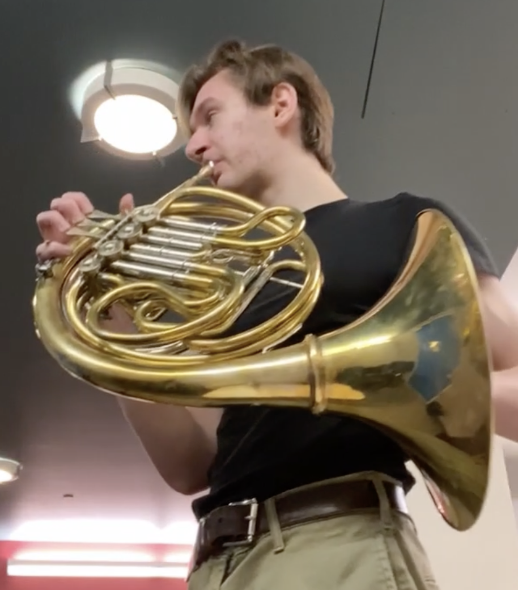
It's an unlacquered double horn, which served me well for most of my collegiate horn-playing career. Given the odd shape of French horns, most new ones have a "screw bell", which detaches and packs flatter than if it were full.
After graduation, I got a job in New York, so as I was packing, I wanted to play my horn one more time before integrating it into the ever-growing pile of dubiously necessary personal effects I insisted upon bringing to my new city. While my performance was similarly dubious, I unscrewed the bell to pack it away, which was rather stuck on. It was only after "unscrewing" it about 90 degrees that I realized I had not unscrewed it at all, rather, I crumpled the brass behind it.
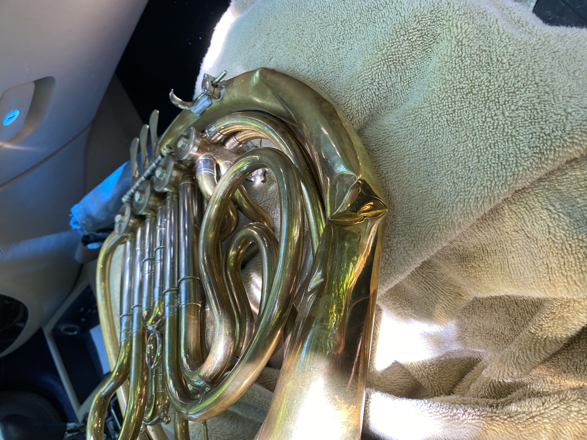 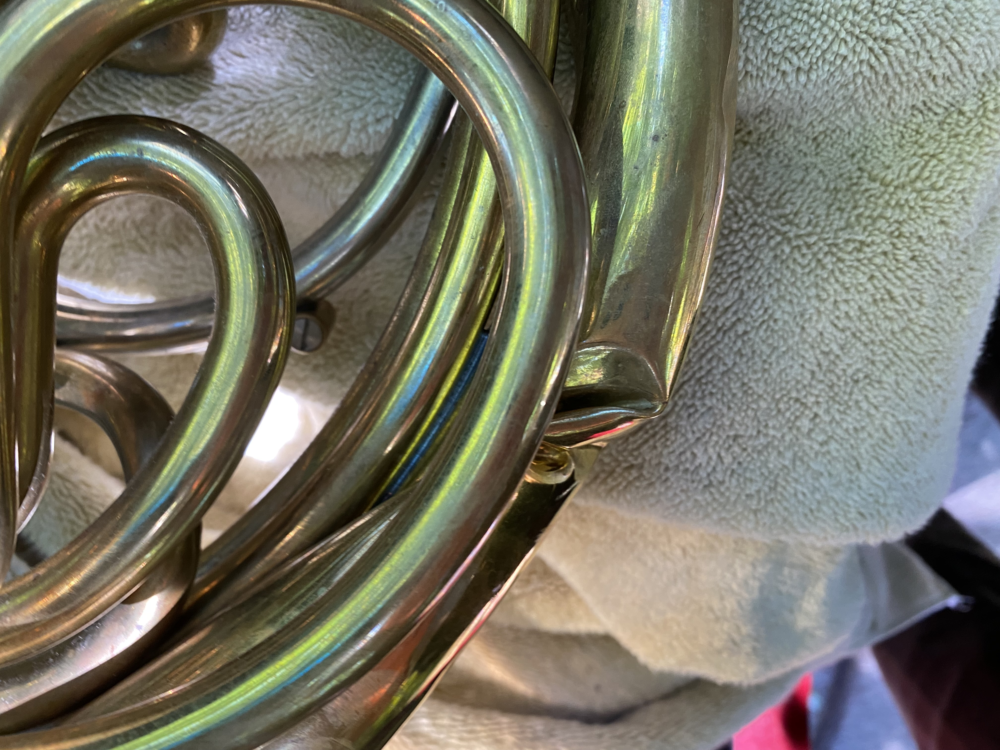 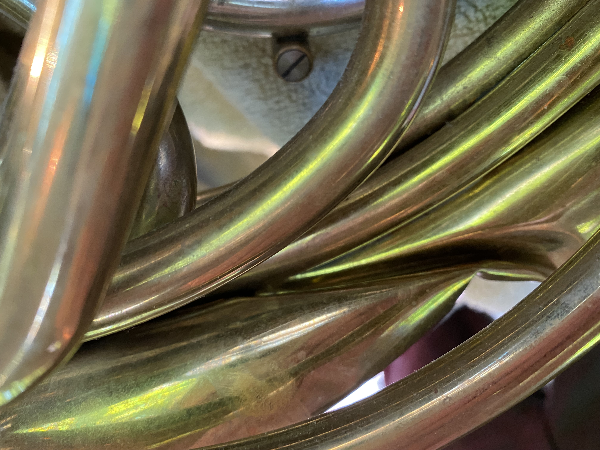
Not being able to fit it back in its case, I bundled the thing in blankets, put it in a box, moved to a new city, leaving it untouched and unplayed for nearly two years. Meanwhile, I kept up my music chops with my other instruments, but after some time, the horn called to me yet again.
I reached out to some places for quotes on repairs, and it seemed it wouldn't be fixed for less than $1,000. Having not yet grown out of my allergy to spending money, I wondered what I could do for this on my own. Sure, the repair shops have specialized tools, education, and experience, but I have just as many hands as they do - why shouldn't I be able to do the same thing (hubris) ? So, I did the math.
I wanted to find the expected value of sending it in for repair versus fixing it myself. Of course, sending it for repair would have an expected value of ~$1200 (1200 cost * 100% likelihood of success), accounting for new parts, labor, and shipping.
Calculating the EV of my repair was slightly more difficult, if only for the estimations necessary. I figured I'd need about $200 in materials (blowtorch, silver solder, flux, rawhide mallet, and a particular curved steel bar from an instrument repair supplier. However, if this repair fails, I still would've had to send it in for repairs, which would still be $1200. So, the question became, "what is the likelihood of failure?" I estimated my chance of success to be around 70 percent. This assumes a binary success/failure outcome, which you'll come to find is not accurate. Internally, I felt I could to 70% of the job with 100% likelihood, but my hubris can often be misled, so let's just say total failure was 30% likely. So, the EV of doing the repair myself is (1.0 * 200) + (0.3 * 1200) = $560, which is still considerably lower than sending it in to be repaired. Ultimately, I wanted to try fixing it myself, as I thought it would be fun, which with the satisfaction of having done it myself, made the prospect of fixing it myself seem plenty worth it. Note, however, that these calculations didn't consider the possibility that I make the instrument worse than when I started. Repairer beware... With unearned confidence in tow, I purchased my tools and got to work!
The game plan was to remove the "bell tail", or the big long tube which was severely dented, use the large metal rod to push the dents out from inside and use the rawhide mallet for any further shaping, then solder it all back together.
First, this was desoldered (missed some joints, so may have overheated some other joints thinking they were still stuck o.O)
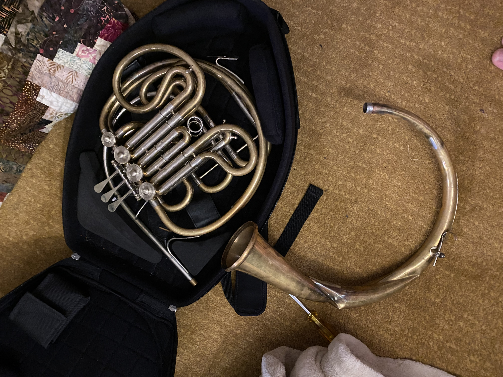 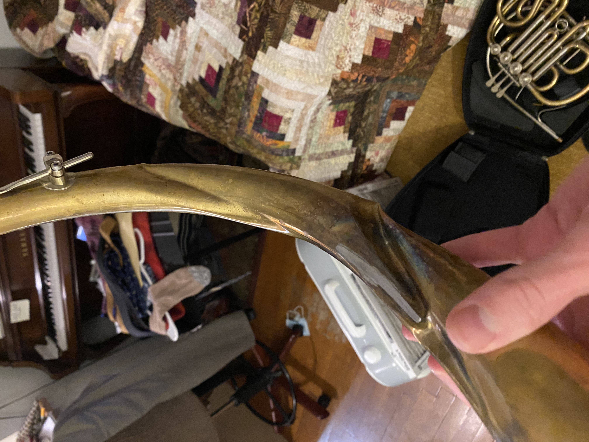
Then, bathed it, as the horn had been sitting for years.
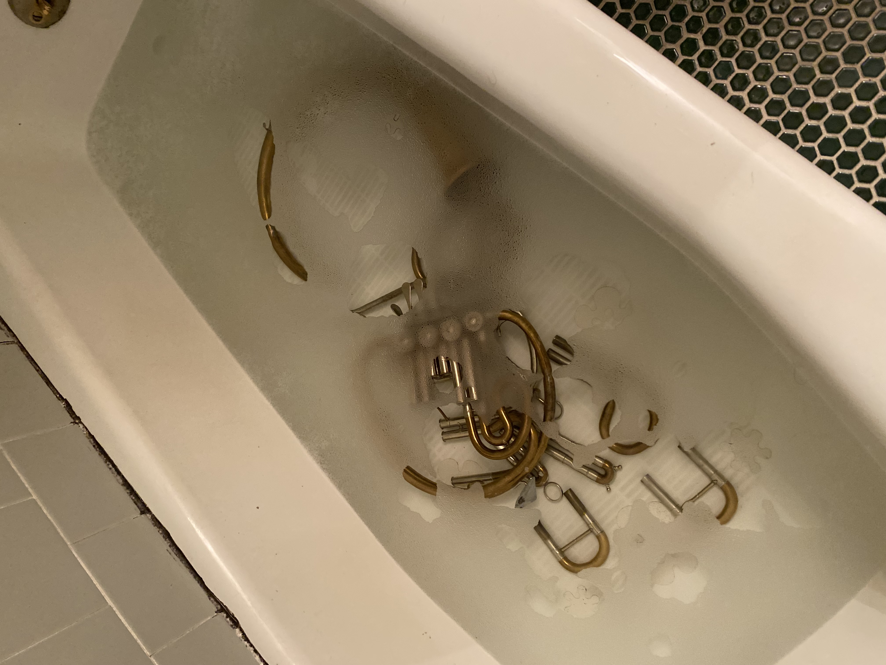 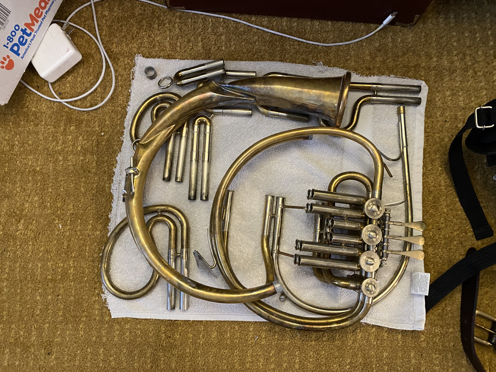
I unfortunately don't have many pictures of the process of pushing the dents out. This was the most difficult part for several reasons. First, this is the kind of thing that is usually done with a suite of specialized tools, including vice grips, different sizes of steel balls attached to the end of the rod, among other things that I don't know about. Second, the metal had folded onto itself so severely that the metal had been so stressed that it was at risk of breaking. I couldn't tell for certain, but it seems like there was already a hairline fracture. So, I had to press enough that the metal comes back out, but not so much that it fractures. In the end, I got it to a point where it was mostly flat and sounded okay, but is not a complete repair. Most shops that I called told me they'd likely replace the entire thing because the metal was too far bent.
So, after a round of polishing the whole thing, I tied it back together and soldered it!
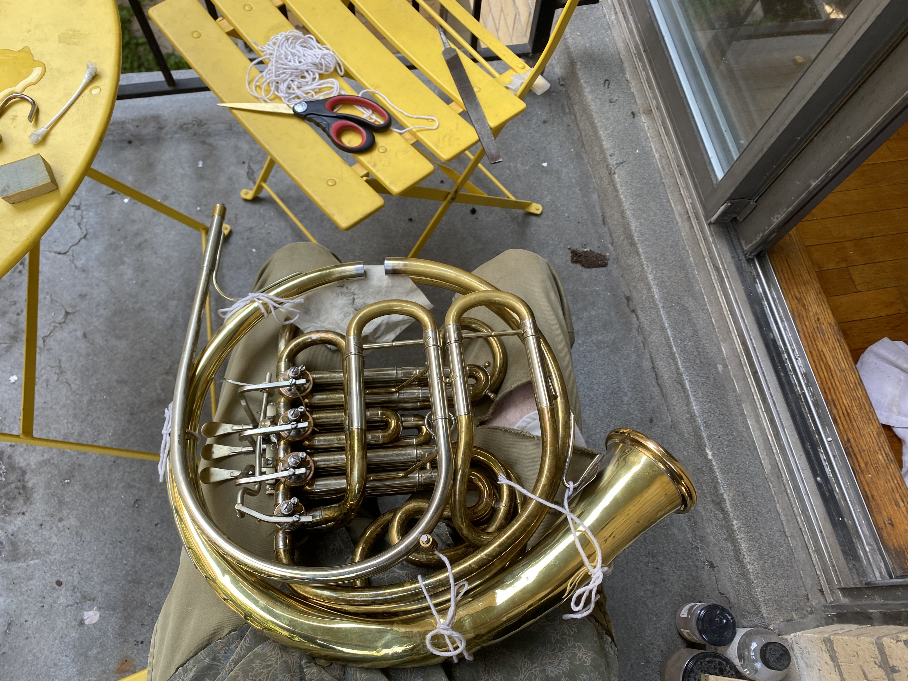 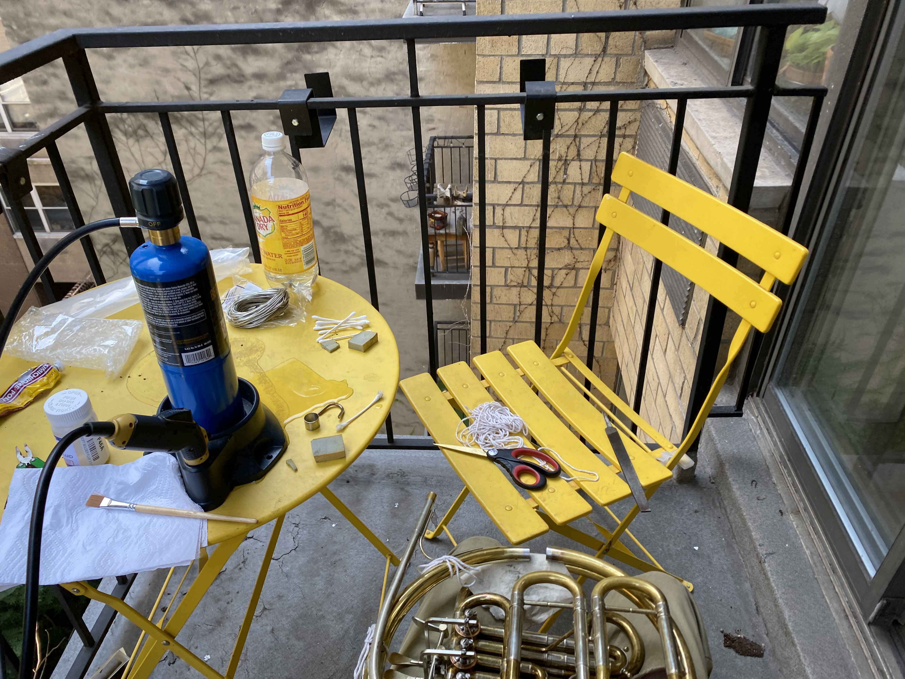
After together, I did a bit more polishing and another bath to get any residual soldering residue or polishing compound. The bell tail moved enough that it no longer lined up with one of the braces, so that's where the string contraption comes in - I have a cloth spacer that provides structural support, and the string holds it together. This wasn't supposed to be permanent, as I could move the brace to fit, but I wanted to make sure the horn works before more permantly soldering it together. I also whipped together a quick leather handguard, as some of the old solder had melted onto the wrong place, and I didn't want to have extended exposure to lead.
So, this is more or less the final product:
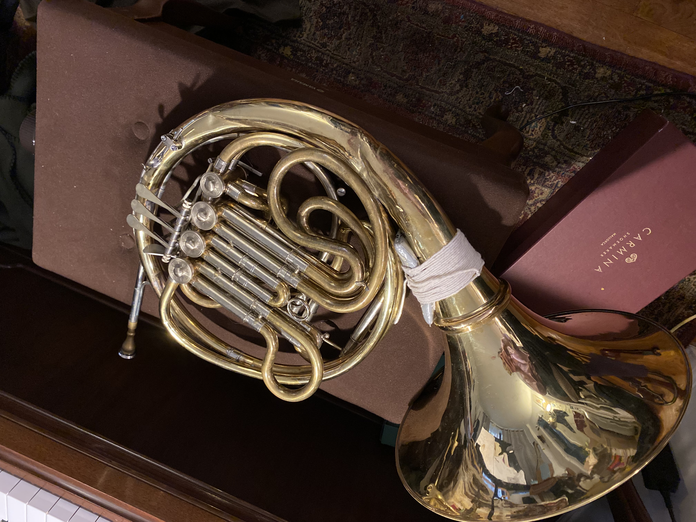
While it still sounds a bit stuffier than it used to (or how I remember it from a couple years ago), it is definitely a functional horn again! I've already played some chamber music with friends, and I can confidently say that most of the notes I missed were due to my not playing for several years, and not due to the horn which I so brutishly broke and un-broke.
This is not meant to be a moral story, but I think there is some subconscious action that happens when you pay someone to do something, and it's like an internal admission that you can't do that thing. In general, I think if one is able bodied, there are very few skills one can't learn to a passable degree. Like the Pareto principle, I got 80% of the result from only 20% of the knowledge of how to fix a French Horn. I have the same number of hands (2) and brains (1) as the repair shop I'd have sent this to, so why not try it myself?